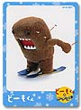
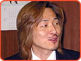
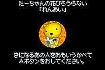
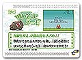

|
 |
|
|
4．
ところで、今回はカードeも同時に発売されますよね。
［山上］ カードeの制作が決まったのは、11月の１日でした。それで、急きょ朱雀さんにお話したんですね。ちょうど冬のオリンピックの前で、どーもくんが冬のスポーツをやっているバージョンが、新しくＣＭとして制作されているときだったんです。それを松本さんのほうからお聞きして、「じゃあそのネタをそのままミニゲームににできませんか」とお願いしたんです。当初は全部で10枚のカードを作り、そのうち７本をゲームにするという計画でした。
eアプリも朱雀で作ったんですか。
［山上］ そうですね。ソフトと同じように企画を出してもらって、ＯＫが出たら作っていくという形です。でも、10枚のカードでは少なすぎるという話になりまして、最終的には全部で30枚のカードを楽しめるようにしたんです。ゲーム以外のシンプルなアプリケーションも入っていますが、１枚としてつまらないものはありません。そこはもう平田マジックですね。そうそう、米澤さんの音楽も入っているんですよ。
そうなんですか？
［米澤］ 現場にいたときはサウンドの部門に在籍していたので、気分転換にやらせてもらいました。カードeの中に６枚の音楽カードが入っているんですね。この作業で、年末の休暇を全部返上しましたね。ソフトのほうにも何曲か私の作曲した曲が入っています。
カードeのプログラムはアドバンスのソフトとはまた別ですよね？
［平田］ そうですね。でも、容量も少ないですし、制作自体はそんなに苦労することはなかったです。スタッフの１名がかなり掘り下げたところまで勉強しましたので、わりと短期間で仕上げることができました。こちらは、普通に遊べるミニゲームという感じです。
［山上］ 例えばスケートのゲームなどでは、ボタンを押してスピードを上げていくんですが、ただ押すだけではダメなんです。少し頭を使う必要があるんですよ。ですから、ミニゲームといえども、かなり深く遊べると思いますよ。そのへんは、平田さんのすごいところですよね。
［平田］ ミニゲーム職人といわれないようにしたいんですけどね（笑）。
何パックか買わないとゲームがプレイできないということはありますか？
［山上］ いえ、今回は同パック中の組み合わせで必ずゲームができるようになっています。５枚１組で販売されるんですが、必ず１つ冬のスポーツが遊べるようになっています。カードの表面にはどーもくんの貴重な写真も使われていますので、コレクション性のあるカードとして楽しんでいただけると思います。また、「どーもくんの不思議てれび」にもカードeが１枚同梱されますよ。
カードのシリーズは続くんでしょうか。
［山上］ 好評であれば続けたいですね。今回はウィンターパックというシリーズですので、できればスプリングパックなども出せればうれしいですね。
［松本］ どーもの写真をこれだけそろえて見られる場もほかにはないので、キャラクターにとっても、いいステージができたと思っています。
 最後に、合田さんのほうから、出来上がったゲームに関する感想をひとことお願いします。 最後に、合田さんのほうから、出来上がったゲームに関する感想をひとことお願いします。
［合田］ 小さなゲーム機で作ってよかったなあと思うんですよ。手のひらの中で動かす感覚が、どーもにあっていると思いました。この小さい世界の中で、いつものどーものような、でも少し違うどーもに会える。なんかうれしい発見でした。
|


|
|
|
|
|
|